IFOS subsystem
The systems built on IFOS, and the installer that puts them on a computer
How it fits together
IFOS2 is the base: a small Debian 13 core. IFelxOS2 is the complete operating system built on top of it, and IFelxOS2.5 its interface update. The ODE installer is the installer, made from the same foundation, that writes it to a disk. itelxOS 1.4 is a separate system with its own kernel that ODE also installs.
Everything on this page was tried in a virtual machine (QEMU/KVM, UEFI and BIOS) before it was written: booted, installed and started from the installed disk. The screenshots come from those runs.
IFOS2 — the base
IFOS2 is the lightweight core and system foundation that IFelxOS2 and the ODE installer are made from. It is a live Debian 13 (trixie) system with Linux 6.12 that starts straight into a text console, signed in as user. It has no desktop and no installer: it is the starting point for building systems.
Its own programs live under /dex, apart from the Debian tree: /dex/apps/ifelx-stable (BusyBox tools, apt, dpkg, flatpak), /dex/apps/xv4.sh (the xv4 package manager, which installs apps isolated under /dex/apps), and /dex/db and /dex/cache for its package data.
| Type | Live system, text console |
| Based on | Debian 13 (trixie), Linux 6.12 |
| ISO size | 706 MB |
| Boot | GRUB, menu entry “IFOS2 Live” |
| Session | Signs in automatically as user (member of sudo) |
| Package tools | apt, dpkg, flatpak, xv4.sh |
| Licence | AGPL-3.0; Debian programs keep their own licences |
| Architecture | x86-64 |
Using it
Write the ISO
Write IFOS2.iso to a USB stick (Rufus, Etcher or dd) or open it in a virtual machine.
Start “IFOS2 Live”
GRUB starts it after 5 seconds. The console opens signed in; sudo works without a password in the live session.
Look around
The network card starts switched off; bring it up yourself when you need it. Some everyday commands are left out on purpose (for example free) to keep the core small.
# what IFOS2 is and where its tools are
cat /etc/os-release
ls /dex/apps
ip -br a
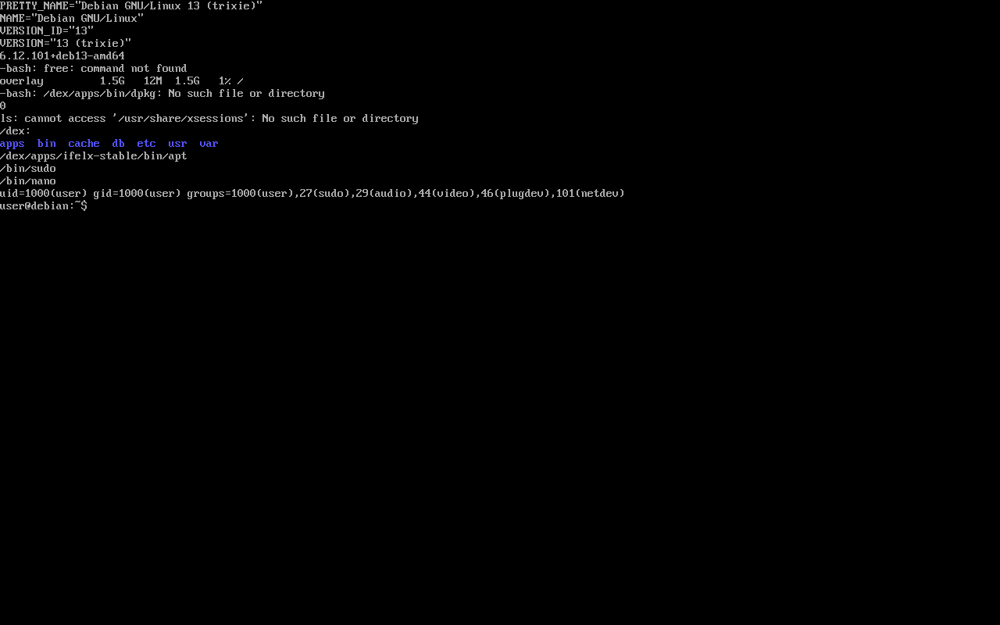
IFelxOS2
IFelxOS2 is the complete operating system built on IFOS. Its desktop, IFelxUi, is a native program that draws straight on the screen (DRM/KMS with cairo and pango): there is no X server, and a small Wayland compositor inside it runs ordinary Linux programs. The interface starts in Arabic (right to left) and switches to English.
It comes with a file manager, text editor, photos, calculator, screenshot tool, settings, games, a web browser and Chromium, an app store and an apt store. Widgets on the desktop show the clock, processor, memory, storage and network.
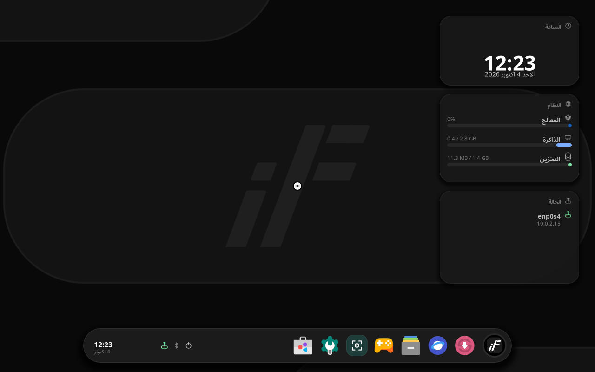
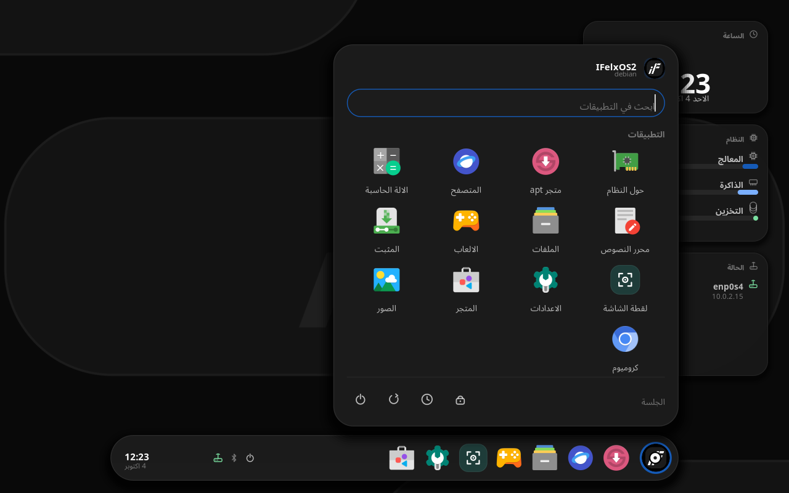
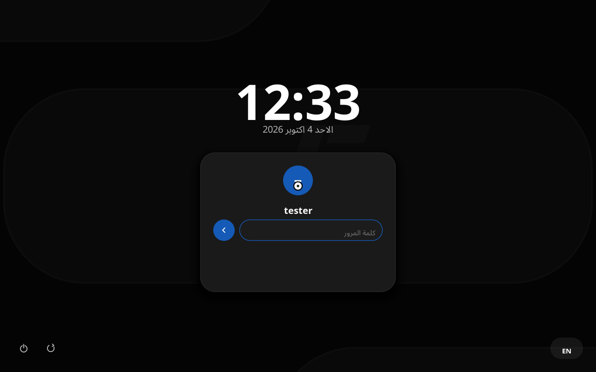
| Based on | IFOS2 (Debian 13), Linux 6.12 |
| Desktop | IFelxUi (native, Wayland programs inside) |
| Download | The ODE installer for IFelxOS2, 1.1 GB |
| Disk | 6 GB at least; about 2.8 GB used after installation |
| Starts on | UEFI (IFelxBoot) and BIOS (GRUB) |
| Languages | Arabic and English |
| Licence | AGPL-3.0 |
Licence
IFelxOS2 is licensed under the GNU Affero General Public License v3.0. You may use it, study it, change it and share it; if you share a changed version, or run it for others over a network, its source must be available under the same licence. The Debian programs inside keep their own free licences, listed in /usr/share/doc/*/copyright. The installer shows these terms and asks you to accept them before installing.
Installing it
IFelxOS2 is downloaded as its ODE installer: start the computer from it and the installer opens directly.
Make the USB stick
Any way works: Rufus (either mode), Etcher, Ventoy or dd. Start the computer from the stick.
Start, terms, disk
Press Start, accept the terms, choose the disk. The stick you started from is never offered.
Installation type
Erase disk and install takes the whole disk. Choose a partition keeps the others; GParted opens from this page to make room.
Your account
Computer name, account name and password. This account can manage the computer with its password (sudo).
Install and restart
After Done, remove the stick and restart. The installed system opens on its sign-in screen; the live account is removed and root is locked.
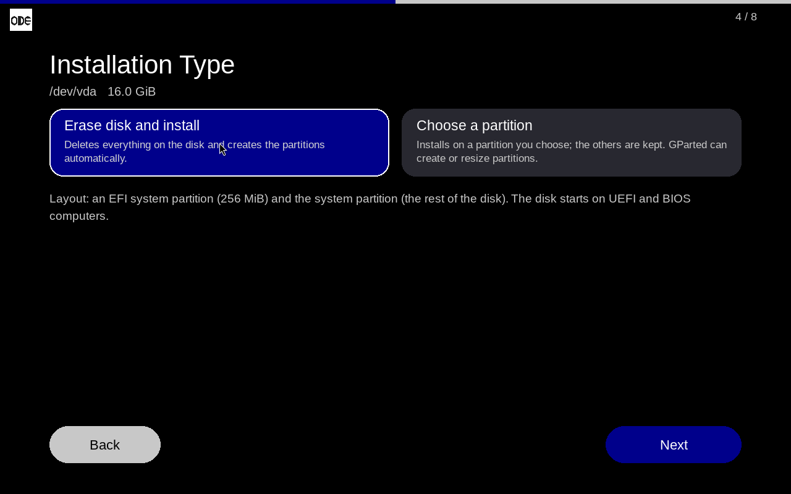
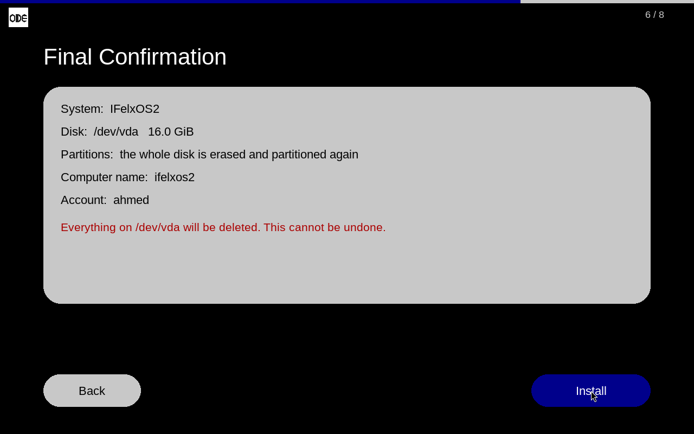
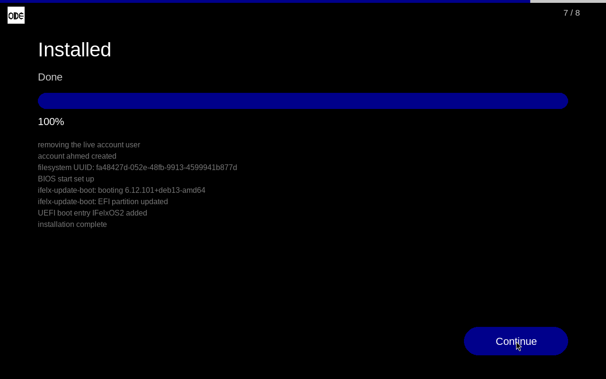
Newer: IFelxOS2.5, the interface update of IFelxOS2, below. IFelxOS2 stays available here as it was published.
IFelxOS2.5 New
IFelxOS2.5 is the interface update of IFelxOS2: the same system and the same IFelx look (colours, rounded corners, fonts, right to left first) with IFelxUi 1.5. It fixes how the interface lays out Arabic text, makes it lighter to run, and closes a hole in its web browser. Nothing in Debian underneath changed.
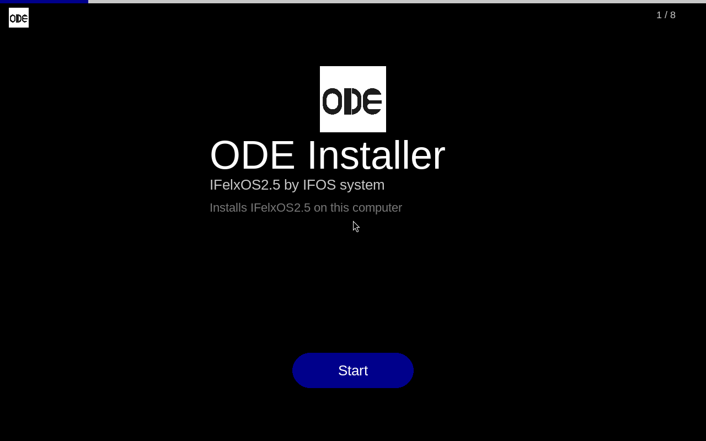
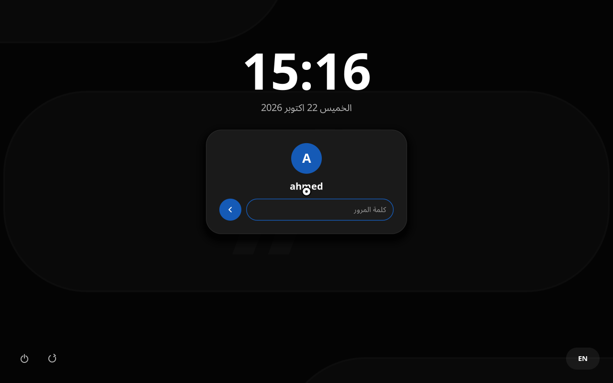
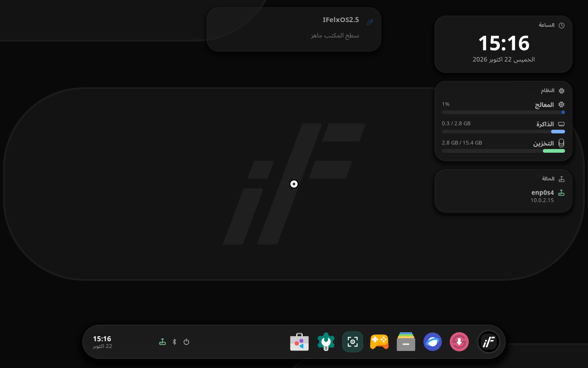
IFelxOS2 and IFelxOS2.5 compared
| IFelxOS2 | IFelxOS2.5 | |
|---|---|---|
| Released | 2026-10-02 | 2026-10-18 |
| Interface | IFelxUi 1.0 (with the 1.1 fixes) | IFelxUi 1.5 |
| Download | The same way for both: the ODE installer, 1.1 GB, which opens straight into the installer; the installed system is used as usual | |
| Arabic text in buttons, fields, title bars, lists, lock screen | Sat low: the Arabic face has a taller line than the Latin one | Centred on its letters, level with English |
| An Arabic line that starts with a Latin word (“DHCP يكتب …”) | Read left to right | Takes the interface's direction: right to left |
| Notifications | In a corner, over the clock widget, the Settings sidebar and window buttons; appear at once | From the top centre, with a short drop |
| Desktop widgets, lock and sign-in card | Fixed heights: the clock ran into its date, the status card had an empty half | As tall as what they show |
| Small grey text, light theme | Dim grey; recessed areas stayed dark in the light theme | Brighter grey in both themes; recessed areas follow the theme |
| Processor, memory, network, battery readings | Read from /proc and /sys on every frame, sixty times a second while a window is dragged | Read at most every 0.9 s and shared |
| Built-in web browser | Fetched pages as root: file:///etc/shadow could be read from the session | Fetches as the signed-in account; only http, https and file; redirects only to http or https |
| Name servers in Settings › Network | Any text went into /etc/resolv.conf | Only IPv4 and IPv6 addresses; the file is replaced atomically |
| Base, boot, licence | The same: Debian 13 with Linux 6.12; UEFI (IFelxBoot) and BIOS (GRUB); AGPL-3.0 | |
Installing it
IFelxOS2.5 is downloaded as its ODE installer, like IFelxOS2: start the computer from it and the installer opens directly.
Make the USB stick
Any way works: Rufus (either mode), Etcher, Ventoy or dd. Start the computer from the stick.
Start, terms, disk
Press Start, accept the terms, choose the disk. The stick you started from is never offered.
Installation type
Erase disk and install takes the whole disk. Choose a partition keeps the others; GParted opens from this page to make room.
Your account
Computer name, account name and password. This account can manage the computer with its password (sudo).
Install and restart
After Done, remove the stick and restart. IFelxOS2.5 opens on its sign-in screen; sign in and use it as usual.
Checked in QEMU/KVM before publishing: the ODE installer started from the ISO, erased the disk and installed IFelxOS2.5; the installed disk started on UEFI and on BIOS, refused a wrong password and signed in.
IFelxOS2.5-amd64.iso · 1.1 GB
SHA-256 b529069bd424132fdc6deb1becc6cd4e2aa67825679797d2bd9635c8ee46ef45
ODE installer Open Source
ODE is an installer medium for operating systems. It starts from a USB stick or a CD on UEFI and BIOS computers, opens a full-screen installer window and writes a system to a disk. Underneath is a small Ubuntu 24.04 that runs entirely from memory, with Xorg, GParted and the window (Python and pygame). The system being installed stays on the stick as /ifelxos/filesystem.squashfs and is read from there.
It finds its stick however it was made: written as an image (dd, Etcher, Rufus “DD mode”), files copied to a FAT32, exFAT or NTFS stick (Rufus “ISO mode”), or the ISO kept as a file (Ventoy). Keyboards, mice and laptop touchpads are picked up as they appear, including ones plugged in later.
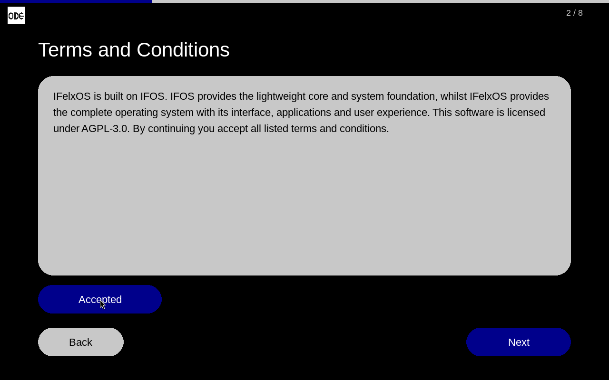
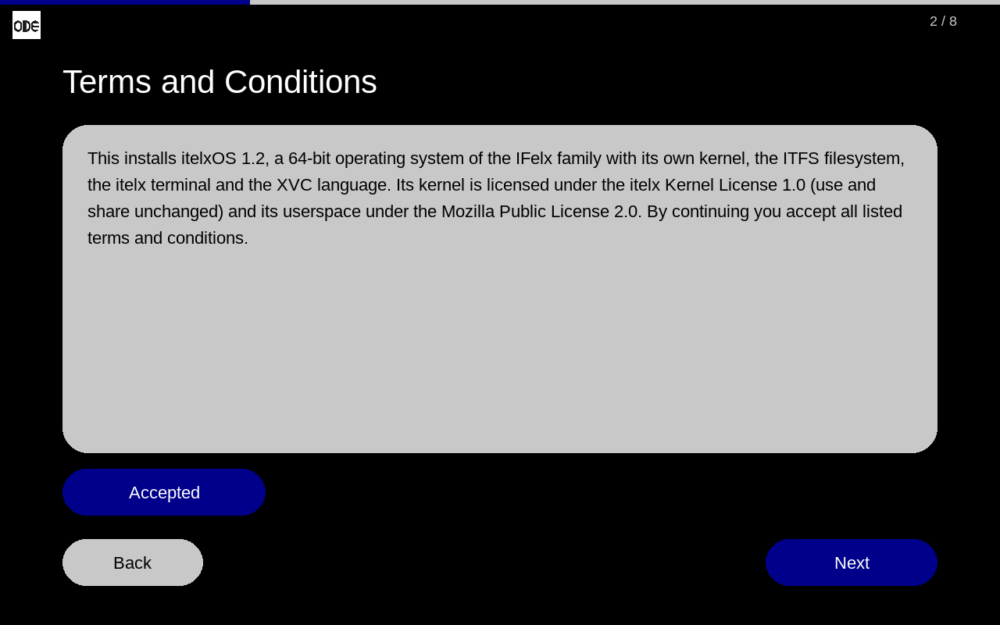
Put your own system in ODE
You do not rebuild ODE for this. Take a finished ODE ISO, change the system image and the texts, and you have an installer for your system. Kernel, installer system, window and boot loaders stay as they are. The source includes tools/make-custom-ode.sh, which does exactly that:
# Linux or WSL, as root (needs xorriso, zstd, cpio, squashfs-tools, python3)
sudo tools/make-custom-ode.sh \
--iso ODE_installer.iso \
--config my-config.json \
--tree my-rootfs/ \
-o MyOS_installer.iso
config.json
Your system's name, default computer name, minimum size in MiB, and the texts of the welcome, terms and finish pages.
The system image
A directory (--tree) or a ready squashfs (--squashfs). Systems built on IFOS2 / IFelxOS2 are installed by the stock backend as they are.
A backend, for other systems
Anything else brings its own ode-install (--backend) with the same commands and progress lines the window reads. The itelxOS example in the source is a full one, for a system that is not Linux.
{
"system": {
"name": "MyOS",
"image": "/run/ode/medium/ifelxos/filesystem.squashfs",
"default_hostname": "myos",
"min_root_mib": 4096
},
"pages": {
"welcome": { "title": "ODE Installer", "subtitle": "MyOS 1.0" },
"terms": { "body": "Your licence and terms here." },
"finish": { "title": "Installation Complete", "message": "Remove the medium and restart." }
}
}
Checked: an itelxOS installer made with this script from the IFelxOS2 ODE ISO started in a virtual machine and showed itelxOS on its pages. The itelxOS installer built the same way installed itelxOS and started it.
| Installer system | Ubuntu 24.04, Linux 6.8, runs from memory |
| Window | Python + pygame, 8 pages |
| Install types | Erase disk · Choose a partition (with GParted) |
| Starts on | UEFI (IFelxBoot) and BIOS (GRUB) |
| Source | Window, installer system, build and tests, and IFelxBoot, the UEFI loader written from scratch |
| Licence | AGPL-3.0 |
ODE's licence does not reach the systems it carries: a system on the same stick is a separate work and keeps its own licence. That is how one ODE installs IFelxOS2 (AGPL-3.0) and itelxOS (its own licences) alike.
itelxOS 1.4
itelxOS is a 64-bit operating system of the IFelx family written from scratch: its own kernel, its own filesystem (ITFS), the itelx terminal, the XVC programming language and XVR executables. It is not Linux. The console draws Arabic and English, and Arabic text runs right to left.
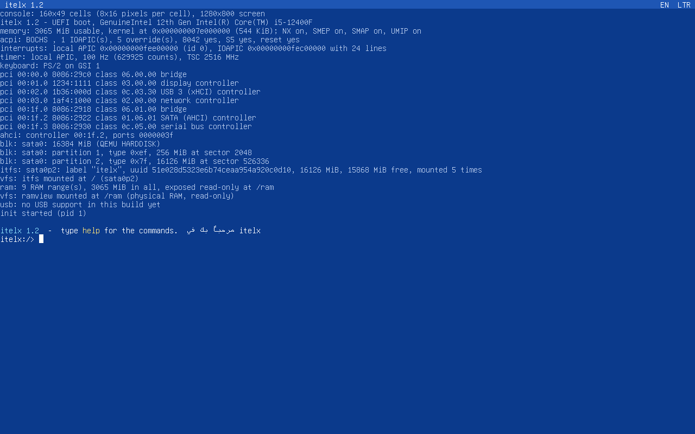
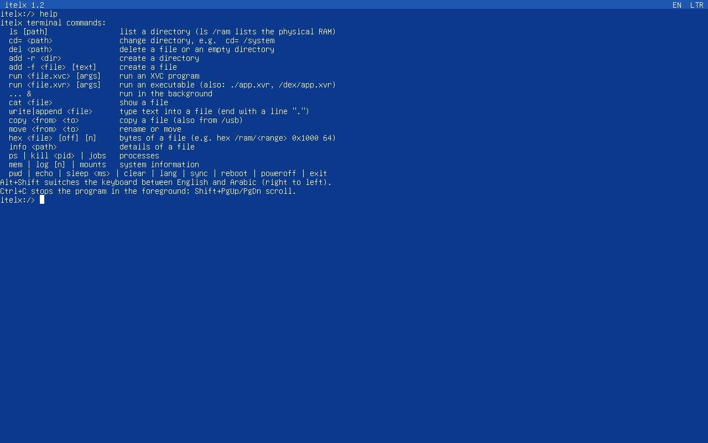
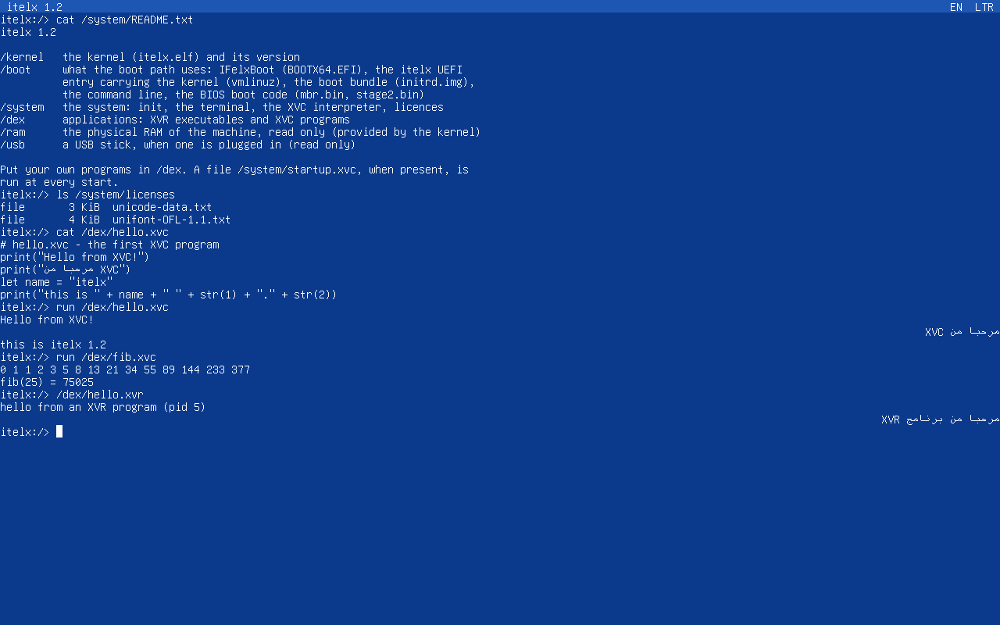
New in 1.4: the sys commands
What the system is, what it is doing and what it runs on, read from the machine itself when you ask: the processor (CPUID), the firmware's memory map, the SMBIOS and ACPI tables, PCI configuration space, and the processor's time stamp counter, which the kernel now reads at every switch between programs. What the machine does not say is shown as “-”; serial numbers are never shown.
sys | the system: version and kernel build, how it started (UEFI or BIOS), running time, clock, owner, system disk and boot partition with free space, memory, processor, screen, processes, programs |
sys.info | processor, memory and graphics use over one second: programs, kernel and idle shares, interrupts, system calls and switches per second, memory by programs and kernel, and the screen drawing (itelx has no graphics driver, so the GPU's share is 0 %) |
sys.info.device | the hardware, from the processor to the graphics: cores and threads, speed, caches, features; memory modules with type, speed, maker and part number; computer, board and case; firmware, UEFI version, Secure Boot, SMBIOS and ACPI; graphics, disks and partitions, USB and PCI devices |
sys.all | all three at once |
sys.top | every process, live, most processor time first, like top and htop; q, Esc or Ctrl+C ends it |
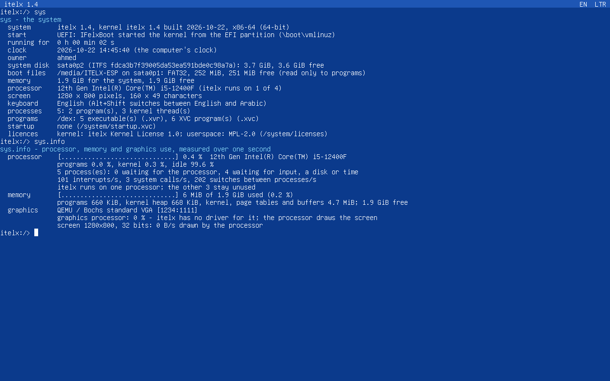
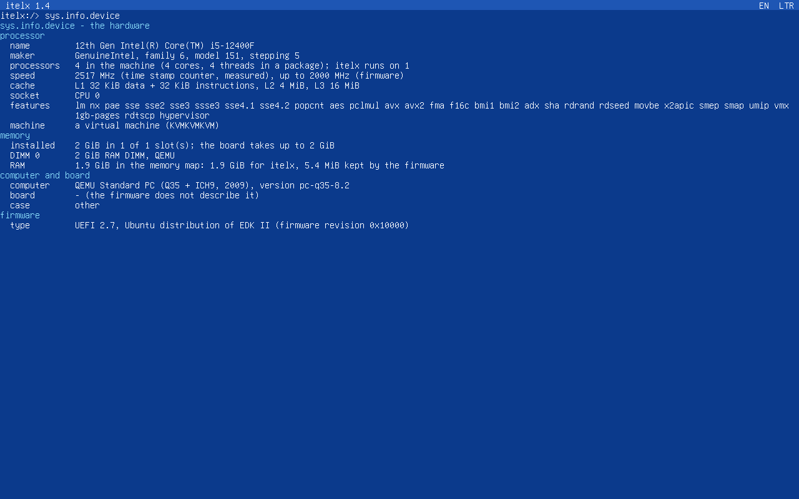
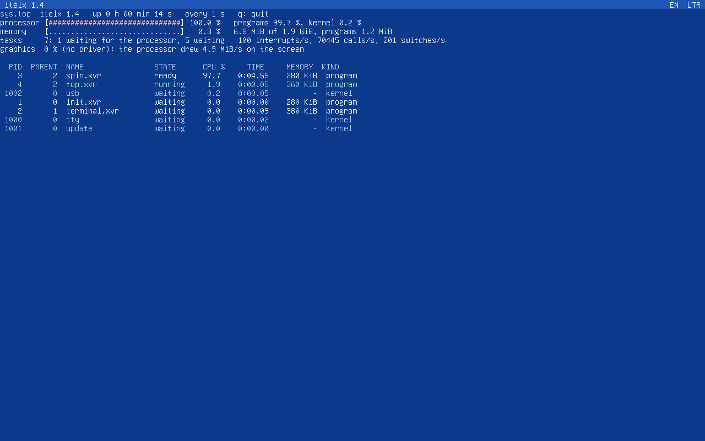
| Kernel | itelx (own), x86-64, NX / SMEP / SMAP on |
| Filesystem | ITFS |
| Starts on | UEFI (IFelxBoot) and BIOS (its own boot code, no GRUB) |
| Disks | SATA (AHCI), IDE, NVMe, USB |
| Keyboard | PS/2 and USB, English and Arabic (Alt+Shift) |
| USB | xHCI (USB 1.1 to 3.x): keyboards, mice, hubs, sticks, card readers, external disks |
| USB storage | FAT32, FAT16, FAT12, read and write (not exFAT or NTFS) |
| Disk space | 256 MB at least |
| Installer | ODE installer for itelxOS; updates from a USB stick (update.xvr) |
| System information | sys, sys.info, sys.info.device, sys.all, sys.top |
| Licence | Kernel: itelx Kernel License 1.0 · Userspace: MPL-2.0 |
Licence
itelxOS has two licences. The kernel (the kernel, the boot code and the ITFS core) is under the itelx Kernel License 1.0: anyone may use it for any purpose, including commercially, read its source and share it unchanged, also on installation media such as the ODE installer, but modified versions may not be distributed; changes can be sent back to the author. The userspace (init, the itelx terminal, the XVC language, libitx, the system call interface and the apps in /dex) is under the Mozilla Public License 2.0: change it and share it, and changed files stay open. Programs you write for itelxOS may be under any licence you like. The licence texts are in /system/licenses.
Installing it
The download is the ODE installer for itelxOS, with the same pages as IFelxOS2's. It asks for an account, but itelxOS has no sign-in: the name is kept as the computer's owner (/system/owner) and the password is not stored. After restarting, the computer starts straight into the itelx terminal.
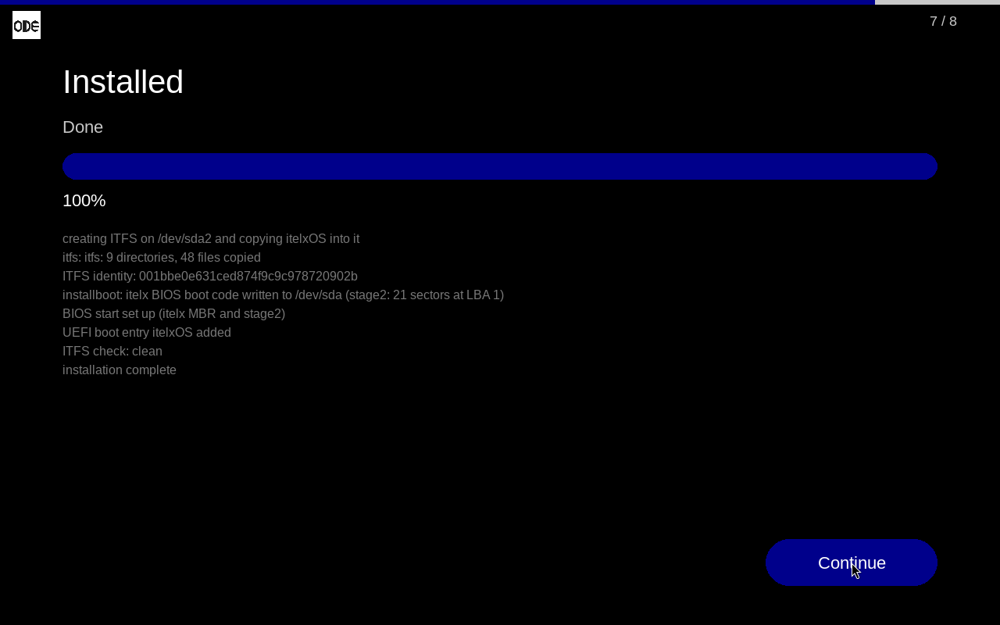
In a virtual machine give itelxOS a SATA, IDE or NVMe disk: with a virtio disk it starts but reports that the system disk was not found. PS/2 and USB keyboards both type.
Using the terminal
help | all commands |
ls · cd= /system | list and change directory |
add -r · add -f · del | make a directory or a file, delete |
cat · write · copy · move | show, type into, copy, rename files |
run file.xvc · /dex/app.xvr | run an XVC program or an executable |
usb · install · eject | USB devices, put a program from a stick into /dex, write a stick out before unplugging it |
sys · sys.info · sys.info.device · sys.all | the system, its use, its hardware, all three |
sys.top · ps · kill | processes, live or once; stop one |
mem · mounts · log | short system information |
reboot · poweroff | restart, switch off |
| Alt+Shift | keyboard between English and Arabic |
Your own programs go in /dex; a file /system/startup.xvc, when present, runs at every start. This is /dex/hello.xvc, which comes with the system:
# hello.xvc - the first XVC program print("Hello from XVC!") let name = "itelx" print("this is " + name + " " + str(1) + "." + str(3))
Updating itelxOS 1.3 to 1.4
No reinstalling and nothing erased: the update comes on a USB stick as update.xvr, a program of the update kind. When the stick goes in, itelx asks are you need update ? and runs it only on yes. It carries the 1.4 files with their checksums, writes each one next to the old one, reads it back, and only then puts it in place; a file that is already the 1.4 one is left alone, so it can run again at any time.
The 1.3 kernel lets no program write the partition the computer starts the kernel from. So no program, not even an update, can replace the kernel while 1.3 runs: the update from 1.3 takes two steps, the second from the stick. From 1.4 on, the update the user accepted, and only it, may write that partition, and updates take one step.
Put update.xvr on a stick
Copy update.xvr to the top of any FAT32 stick. For a computer that starts with BIOS, write itelx-1.4-update-usb.img.gz to the stick instead (Rufus in DD mode or Etcher take it as it is): the same update on a stick that also starts by itself.
Plug it into itelxOS 1.3, answer yes
The system files on the disk become 1.4: the terminal with the sys commands, top, init, XVC and the kernel's copy in /kernel. A plain stick is made to start itelxOS 1.4 by itself. The sys commands already work and say what still needs the 1.4 kernel.
Start once from the stick, answer yes again
Restart and choose the stick in the firmware's boot menu (often F12, F11, F10, F8 or Esc). itelxOS 1.4 starts from the stick with your own disk and asks again. On yes the 1.4 kernel goes onto the disk's boot partition (the 1.3 kernel stays there as vmlinuz.old), and the boot files on the stick are removed.
Remove the stick and restart
itelxOS 1.4 starts from the disk; sys shows kernel 1.4. Your files in /dex and everywhere else are where they were.
Checked in QEMU/KVM on the published 1.3 image: UEFI with a plain FAT32 stick and BIOS with the stick image, both steps, then the disk alone; afterwards the boot partition and the stick pass fsck.fat and the system disk passes the ITFS check. On 1.4 the same update takes one step, and the boot partition stays closed to any program the user starts by hand.
update.xvr · 1,136,473 bytes
SHA-256 9fc430cfdbd41d2e644c7b2016461a7c8e25f65f1b49756c83e06ddc0cab1cea
itelx-1.4-update-usb.img.gz · 658,508 bytes
SHA-256 921dc912523033c3c9d9d92100752e2dddc17f5b10cb2daa82f13e6bd3236468
Or install itelxOS 1.4 from its ODE installer above: that erases the disk.
Versions
| 1.4 Latest 2026-10-22 |
What the system is, what it is doing and what it runs on.
ODE_installer_itelx-1.4.iso · 179 MB |
| 1.3 2026-10-10 |
USB, FAT storage, and programs from outside the system.
ODE_installer_itelx-1.3.iso · 179 MB |
| 1.2 First version 2026-10-04 |
The first version of itelxOS.
ODE_installer_itelx-1.2.iso · 179 MB |